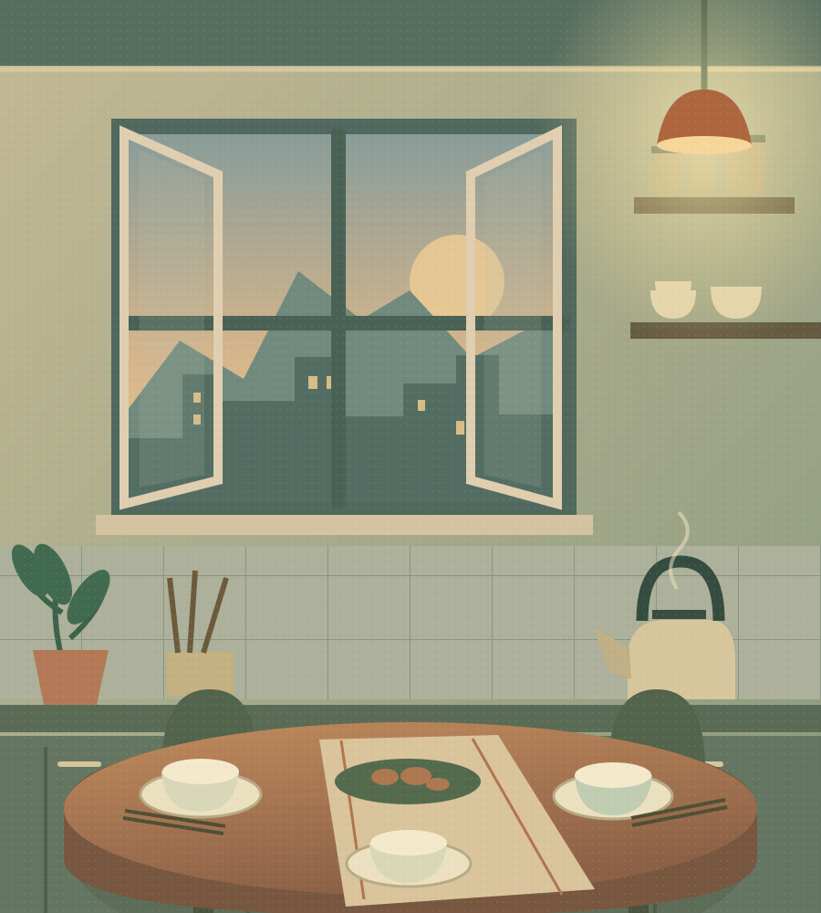

A STORY IN THREE CONVERSATIONS
Between
Two Languages.
Giữa hai ngôn ngữ
Some things translate.
Others need a little more room.
A seat at the dinner table. A word that won’t come.
A different way of saying who you are.
English & Vietnamese · Translations included
01 / AT HOMEMột chỗ ngồi cho bạn

“Ăn cơm chưa con?”Have you eaten yet?
ở nhà
at homeFamiliar words. More than one meaning.✳
ONE DAY.
MORE THAN ONE WAY TO SAY IT.
01HomeWhat the words carry
02SchoolFinding your expression
03Between worldsSpeaking for yourself
THE END · AND ANOTHER BEGINNING
There is room
for both.
You carried more than words from one conversation to the next.
Here are the moments that made this telling yours.
No score. No perfect translation. Just a different conversation.